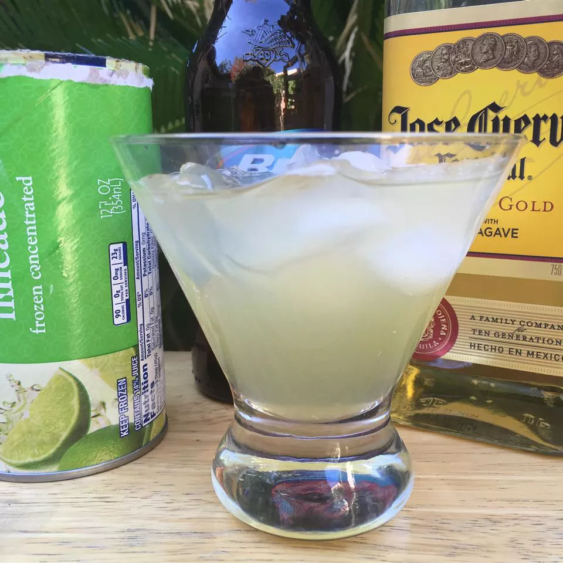

Cocktail Recipe

My mum taught me how to make these and I have been hooked ever since.
Ingredients:
- 6 (12 fluid ounce) cans or bottles beer
-
1 (12 fluid ounce) can frozen limeade concentrate (such as Minute Maid®)
- 12 fluid ounces tequila
- 6 cups ice cubes
Steps:
-
Pour beers into a large pitcher. Add limeade; stir to combine. Use
limeade can to measure out tequila; pour into pitcher and stir to
combine. Serve over ice.